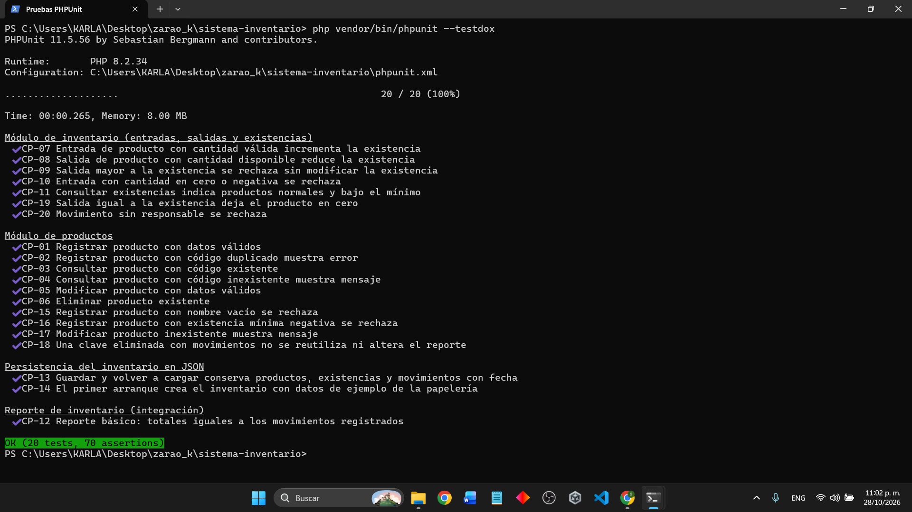

20 / 20PHPUnit · 70 verificaciones · 0.265 s
Captura de la terminal
Captura de la terminal

18 / 18Playwright · Edge · 1.1 min
Reporte HTML completo
Reporte HTML completo
SuccessGitHub Actions · 2 min 56 s
Ver la ejecución
Ver la ejecución
CP-01
AprobadoTipo: UnitariaRF-01 · Registrar productos
- Resultado esperado
- Producto guardado con existencia 0.
- Resultado obtenido
- P-002 se guardó con existencia 0.
- Tiempo
- 0.000 s
Salida de la ejecución
PHPUnit 11.5.56 · PHP 8.2.3428/10/2026, 11:02 p. m.Pasó
OK CP-01 Registrar producto con datos válidos (0.000 s) ProductosTest::testRegistrarProductoConDatosValidos

CP-02
AprobadoTipo: UnitariaRF-01 · Registrar productos
- Resultado esperado
- Error de clave repetida.
- Resultado obtenido
- Se mostró “La clave P-001 ya existe”.
- Tiempo
- 0.001 s
Salida de la ejecución
PHPUnit 11.5.56 · PHP 8.2.3428/10/2026, 11:02 p. m.Pasó
OK CP-02 Registrar producto con código duplicado muestra error (0.001 s) ProductosTest::testRegistrarProductoDuplicado
CP-11
AprobadoTipo: UnitariaRF-02 · Consultar existencias
- Resultado esperado
- P-001 bajo mínimo y P-002 normal.
- Resultado obtenido
- Así aparecieron los dos productos.
- Tiempo
- 0.000 s
Salida de la ejecución
PHPUnit 11.5.56 · PHP 8.2.3428/10/2026, 11:02 p. m.Pasó
OK CP-11 Consultar existencias indica productos normales y bajo el mínimo (0.000 s) MovimientosTest::testConsultarExistencias
CP-03
AprobadoTipo: SistemaRF-02 · Consultar existencias
- Resultado esperado
- PAP-100 en la búsqueda.
- Resultado obtenido
- El buscador mostró PAP-100.
- Tiempo
- 2.3 s
Salida de la ejecución
Playwright 1.48.2 · Microsoft Edge28/10/2026, 11:02 p. m.Pasó
OK inventario.spec.js:57 CP-03 Consultar producto existente con el buscador (2.3 s)
CP-04
AprobadoTipo: SistemaRF-02 · Consultar existencias
- Resultado esperado
- Aviso de producto no encontrado.
- Resultado obtenido
- Apareció el aviso de PAP-999.
- Tiempo
- 1.4 s
Salida de la ejecución
Playwright 1.48.2 · Microsoft Edge28/10/2026, 11:02 p. m.Pasó
OK inventario.spec.js:67 CP-04 Consultar producto inexistente muestra mensaje (1.4 s)
CP-07
AprobadoTipo: UnitariaRF-03 · Registrar entradas de mercancía
- Resultado esperado
- Existencia de 0 a 20.
- Resultado obtenido
- La existencia subió a 20.
- Tiempo
- 0.000 s
Salida de la ejecución
PHPUnit 11.5.56 · PHP 8.2.3428/10/2026, 11:02 p. m.Pasó
OK CP-07 Entrada de producto con cantidad válida incrementa la existencia (0.000 s) MovimientosTest::testEntradaIncrementaExistencia
CP-08
AprobadoTipo: SistemaRF-04 · Actualizar cantidades con cada venta
- Resultado esperado
- PAP-100 queda en 15.
- Resultado obtenido
- Se confirmó la salida de 5 piezas.
- Tiempo
- 1.5 s
Salida de la ejecución
Playwright 1.48.2 · Microsoft Edge28/10/2026, 11:02 p. m.Pasó
OK inventario.spec.js:94 CP-08 Salida de producto reduce la existencia (1.5 s)
CP-09
AprobadoTipo: UnitariaRF-04 · Actualizar cantidades con cada venta
- Resultado esperado
- Venta rechazada; quedan 20.
- Resultado obtenido
- La venta de 50 se rechazó.
- Tiempo
- 0.001 s
Salida de la ejecución
PHPUnit 11.5.56 · PHP 8.2.3428/10/2026, 11:02 p. m.Pasó
OK CP-09 Salida mayor a la existencia se rechaza sin modificar la existencia (0.001 s) MovimientosTest::testSalidaMayorALaExistenciaSeRechaza
CP-12
AprobadoTipo: IntegraciónRF-05 · Generar el reporte de movimientos
- Resultado esperado
- Totales iguales a los movimientos.
- Resultado obtenido
- Los totales coincidieron.
- Tiempo
- 0.000 s
Salida de la ejecución
PHPUnit 11.5.56 · PHP 8.2.3428/10/2026, 11:02 p. m.Pasó
OK CP-12 Reporte básico: totales iguales a los movimientos registrados (0.000 s) ReporteTest::testReporteCoincideConMovimientos
CP-13
AprobadoTipo: IntegraciónRF-03 y RF-05 · Entradas y reporte
- Resultado esperado
- Datos conservados al recargar.
- Resultado obtenido
- Los datos se conservaron.
- Tiempo
- 0.250 s
Salida de la ejecución
PHPUnit 11.5.56 · PHP 8.2.3428/10/2026, 11:02 p. m.Pasó
OK CP-13 Guardar y volver a cargar conserva productos, existencias y movimientos con fecha (0.250 s) AlmacenJsonTest::testGuardarYCargarConservaLosDatos
CP-23
AprobadoTipo: AceptaciónRF-01 a RF-05 · Proceso completo
- Resultado esperado
- Día completo sin errores.
- Resultado obtenido
- Las 6 partes pasaron.
- Tiempo
- 28.2 s
Salida de la ejecución
Playwright 1.48.2 · Microsoft Edge28/10/2026, 11:02 p. m.Pasó 6/6
OK CP-23 · 1 La cliente registra un producto nuevo (6.1 s) OK CP-23 · 2 Llega mercancía: entrada de 25 piezas (4.7 s) OK CP-23 · 3 Venta: salida de 8 piezas (4.7 s) OK CP-23 · 4 No se puede vender más de lo que hay (4.7 s) OK CP-23 · 5 Existencias avisan cuando un producto queda bajo el mínimo (6.3 s) OK CP-23 · 6 El reporte cuadra con lo que se movió (1.7 s)
Integración continua
SuccessGitHub Actions- Ejecución
- Run 40818606235 · commit ae6f3df · rama feature/interfaz-pinguinos
- Etapas
- Unitarias 11 s · Integración 9 s · Sistema y aceptación 1 min 53 s · Imagen Docker 32 s
- Archivo del flujo
- .github/workflows/ci-pruebas.yml